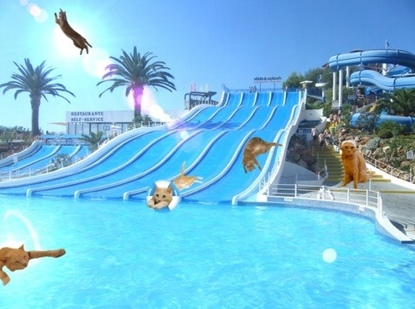
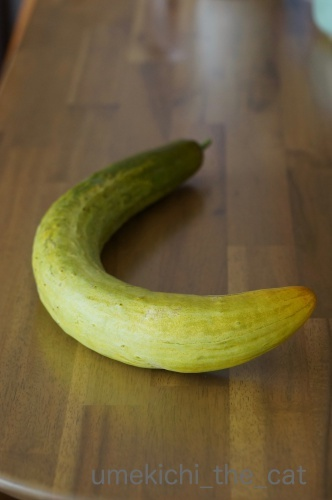
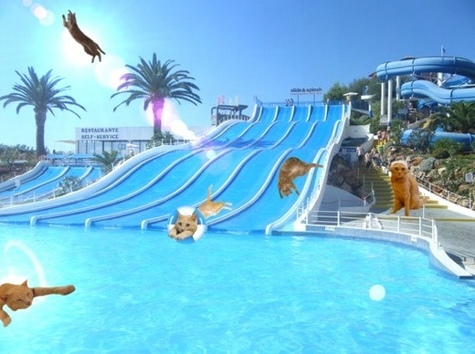
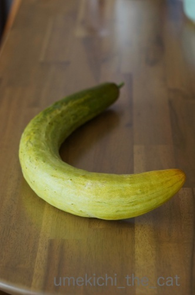

季節のご挨拶 [梅吉]
皆様、暑中お見舞い申し上げますm(_ _)m

蒸し蒸しと暑い日が続いていますね。
日常のひと時、梅吉のプール画像で涼を取っていただけると嬉しゅうございます＾＾
ちなみに右端にいるのはあざらし梅吉です(*>艸<)
あの時「水泳選手みたい」とのコメントをいつくかいただいたので満を持しての登場ですよ。
今回はプールの監視員、ライフセーバーということでお願いします＾＾
《座布団三枚の漢》
昨日はすももちゃんが座布団にしがみつく様にくつろいでいらっしゃいましたが
最近の梅吉の主な居場所も座布団の上になっております。

こんな感じででろ〜ん (⌒_⌒;
ところで、梅吉さん、重大なお知らせがありますよ。
我が家の座布団は梅吉さんが乗ってるのが全てです。
なので梅吉さんがどんなに面白いことしても座布団はMAX 三枚です。

![[猫]](https://blog.ss-blog.jp/_images_e/101.gif) なぬっ！
なぬっ！

が〜ん![[たらーっ（汗）]](https://blog.ss-blog.jp/_images_e/163.gif) ほんまかいな・・・・・
ほんまかいな・・・・・

やまみたいな ざぶとんにのるん たのしみにしとったのに
皆様に暑中お見舞いをお届けするに当たり、そういえば暑中お見舞いはいつ出すの？
と思い調べてみました。
諸説ある様なので以下に列記。
◉夏の土用から立秋（８月６日）の前日
◉小暑（７月７日）から立秋の前日
◉梅雨明けから立秋の前日
立秋の前日までは同じなのですが送り始めの時期が違っていました。
梅雨明け（東北はまだですが）と小暑は過ぎたので良いかな、と
一筆したためて（違）みましたー＾＾
 ↑ガブッと一押し↑
↑ガブッと一押し↑
近くの神社の御縁日にはたくさんの市が立ちます。
近隣の農家の方もお店を出していて
朝採りと思われる野菜がたくさん並ぶんですよ＾＾
先日は枝豆を目当てに買い物していたのですが
お店のおばちゃんが強力プッシュして来る野菜があったので
物は試し、以前からその野菜の名は聞いていたし興味もあったので買ってみました。

毛馬（けま）きゅうり。
遡ること江戸期、毛馬村（現在の大阪市豊島区毛馬町）あたりで栽培されていた
大阪の伝統野菜です。
おばちゃんに
「じゃあ美味しそうなの選んで」と言うと一番曲がったのをくれましたw
自分で選ぶ人は真っ直ぐなのを買うと思われるので売れ残りそうなのくれたっぽいwww
でも、野菜は見た目じゃないから全然平気(^_－)☆
「し」を写したから「つ」も写してみた( ´艸｀)
おばちゃんに美味しい食べ方を聞いたら
「皮が固めなので剥いたほうがいい。中の種は軽くスプーンで落として。酢の物が合うよ。甘いで。」
と教えてくれたんだと思う。たぶん。
滅多に聞かない様な大阪弁でめちゃ早口。しかも滑舌がイマイチだったので
自分の頭の中で変換してみました(*>艸<)
（大阪弁って本当は美しいのです。今世の中に広がっているのは混ざり合った関西弁かな？
お笑い芸人さんの影響で「攻撃的な言葉」みたいになってしまっていますけど。
純粋な大阪弁は人形浄瑠璃の太夫の語り口がそれと言われていますよね。
亡くなった七代竹本住大夫さんは普段も（講演等で聴くと）それは美しい大阪弁でした。）

おばちゃんの教え通りにピーラーで皮をむいていると
（良い意味で）すごくきゅうり臭い！！
切り口は緑っぽいです。
かじってみると、本当！とっても甘い！！
きゅうりとまくわうりの中間みたいな・・・
主に酢の物にするつもりですが少し取り置いて
一人ランチのサラダにプラス！とっても美味しかったですよー。
普通のきゅうり、時々水道水っぽい匂いのすることってありませんか？
あれとは全く別物でした！
ちなみに一本100円なり。
スーパーで３本198円のきゅうりのことを考えると割高ですが
買う価値あり、と思いました＾＾

蒸し蒸しと暑い日が続いていますね。
日常のひと時、梅吉のプール画像で涼を取っていただけると嬉しゅうございます＾＾
ちなみに右端にいるのはあざらし梅吉です(*>艸<)
あの時「水泳選手みたい」とのコメントをいつくかいただいたので満を持しての登場ですよ。
今回はプールの監視員、ライフセーバーということでお願いします＾＾
《座布団三枚の漢》
昨日はすももちゃんが座布団にしがみつく様にくつろいでいらっしゃいましたが
最近の梅吉の主な居場所も座布団の上になっております。

こんな感じででろ〜ん (⌒_⌒;
ところで、梅吉さん、重大なお知らせがありますよ。
我が家の座布団は梅吉さんが乗ってるのが全てです。
なので梅吉さんがどんなに面白いことしても座布団はMAX 三枚です。


皆様に暑中お見舞いをお届けするに当たり、そういえば暑中お見舞いはいつ出すの？
と思い調べてみました。
諸説ある様なので以下に列記。
◉夏の土用から立秋（８月６日）の前日
◉小暑（７月７日）から立秋の前日
◉梅雨明けから立秋の前日
立秋の前日までは同じなのですが送り始めの時期が違っていました。
梅雨明け（東北はまだですが）と小暑は過ぎたので良いかな、と
一筆したためて（違）みましたー＾＾
近くの神社の御縁日にはたくさんの市が立ちます。
近隣の農家の方もお店を出していて
朝採りと思われる野菜がたくさん並ぶんですよ＾＾
先日は枝豆を目当てに買い物していたのですが
お店のおばちゃんが強力プッシュして来る野菜があったので
物は試し、以前からその野菜の名は聞いていたし興味もあったので買ってみました。

毛馬（けま）きゅうり。
遡ること江戸期、毛馬村（現在の大阪市豊島区毛馬町）あたりで栽培されていた
大阪の伝統野菜です。
おばちゃんに
「じゃあ美味しそうなの選んで」と言うと一番曲がったのをくれましたw
自分で選ぶ人は真っ直ぐなのを買うと思われるので売れ残りそうなのくれたっぽいwww
でも、野菜は見た目じゃないから全然平気(^_－)☆
「し」を写したから「つ」も写してみた( ´艸｀)
おばちゃんに美味しい食べ方を聞いたら
「皮が固めなので剥いたほうがいい。中の種は軽くスプーンで落として。酢の物が合うよ。甘いで。」
と教えてくれたんだと思う。たぶん。
滅多に聞かない様な大阪弁でめちゃ早口。しかも滑舌がイマイチだったので
自分の頭の中で変換してみました(*>艸<)
（大阪弁って本当は美しいのです。今世の中に広がっているのは混ざり合った関西弁かな？
お笑い芸人さんの影響で「攻撃的な言葉」みたいになってしまっていますけど。
純粋な大阪弁は人形浄瑠璃の太夫の語り口がそれと言われていますよね。
亡くなった七代竹本住大夫さんは普段も（講演等で聴くと）それは美しい大阪弁でした。）

おばちゃんの教え通りにピーラーで皮をむいていると
（良い意味で）すごくきゅうり臭い！！
切り口は緑っぽいです。
かじってみると、本当！とっても甘い！！
きゅうりとまくわうりの中間みたいな・・・
主に酢の物にするつもりですが少し取り置いて
一人ランチのサラダにプラス！とっても美味しかったですよー。
普通のきゅうり、時々水道水っぽい匂いのすることってありませんか？
あれとは全く別物でした！
ちなみに一本100円なり。
スーパーで３本198円のきゅうりのことを考えると割高ですが
買う価値あり、と思いました＾＾

カフェオレ色の梅吉

梅吉 2023年8月10日 永眠


梅吉と出会った譲渡会

犬猫の理由なき殺処分ゼロ
妄想広告
UMEKICHI 光

爆発的に早い！
時々攻撃的！
Thanks to Mr.Boss365
爆発的に早い！
時々攻撃的！
Thanks to Mr.Boss365

涼しげなプール画像、ナイスですー（≧∇≦）
空に飛び出してるのもあるし！
このキュウリ、知りませんでしたー。
by よーちゃん (2018-07-12 09:03)
大阪弁ってキツいイメージめちゃめちゃあります。
でも北海道弁も案外キツいよね(笑)
そっか、本来はもっと美しいのですね。
お笑い芸人さんのイメージしかなかった^^;
梅吉君の暑中お見舞いありがとう！
涼しい気分になったよー^^
暑中お見舞いって、梅雨明けから立秋の前日ってイメージだったの。
でも今回東京は早くに梅雨明けしちゃって、どうするんだ？って思って
じつは、わたしも時期を調べたばかりでしたｗｗｗ
by リュカ (2018-07-12 09:57)
パッと見、傷んだきゅうり？って思ってしまった(^^;
昔、都内から名古屋に越した時
野菜を売りに来た地元のおばあちゃんの言葉が全くわからない、と母が困っていたのを思い出しました(^^;
by も〜 (2018-07-12 10:38)
おはようございます。
あざらし梅吉！！リアルなプールの監視員に見えますね！！
梅吉君に代わってアフレコ・・・
お見事！！・なぬっ！・ニャンであねん！！可愛いです！？(=^･ｪ･^=)
「すももちゃん」の文字を入れて頂き感謝です！！
落ち込んでいる時・ちぃさんに助けられます！？（￣ ￣！！）
by Boss365 (2018-07-12 10:48)
梅吉ブルー全開のプールは気分よさそうですね(#^^#)
助けに来てくれるのが梅吉さんなら、おばちゃん、わざと溺れたフリしちゃうかも♪
なにわ伝統野菜、毛馬胡瓜、勝間南瓜、天王寺蕪など、実際にはあまりお目にかかる機会がなくて毛馬胡瓜も食べたことがありません^^;
大阪弁は吉本やヤクザ映画の影響が強すぎ。
実際にはやわらかい言葉が多いんですけど・・ただ、早口は間違いない！
私も学生時代に関東方面の友人に「何言ってるかわからない」と言われたことありまーす(≧▽≦)
by ゆきち (2018-07-12 12:39)
おぉぉ! 梅吉さんやっぱり泳ぎも得意だったんですね。すごくたのしー!!
座布団10枚差し上げたかったのにダメなんだ。座布団あまり使わないのにかさばりますからね。代わりに私から10ナデナデでお願いしまーす。
by zombiekong (2018-07-12 12:40)
ヒャッホー（笑）
梅吉さんの涼しげな風景、暑さも遠のきました。
座布団カバーの朝のシャリシャリ感が気持ち良いのでしょうね。
梅吉さん専用で満足そうです。
座布団我が家には1枚もありません（笑）
座卓に座る習慣がないのに、約20年座布団の管理だけしていました。
数回は使用していましたが、まっさらでした。
が処分しました。
実家で法事などで座布団を出したら夏冬用、合わせると約50枚、
もう、そんなに人は集まりません。
5枚づつ置いて、あとは処分しました。
by kiki (2018-07-12 12:57)
涼しげなニャン達にポチ♪
座布団３枚！！！
おーいヤマダくーん♪
ひいきしちゃだめだぞー(笑)
by 猫毬 (2018-07-12 13:12)
空飛ぶ梅吉さん！
泳ぐ梅吉さん！
すべる梅吉さん！
転がる？梅吉さん！
監視員梅吉さん！！
いろんな梅吉さんを堪能させていただきました(#^.^#)
座布団の上でとろける梅吉さんも可愛いです！
by きぃ (2018-07-12 15:50)
こんにちは＾＾
よく出来てますねー暑中お見舞いカード(^^)/
監視員、ちゃんと働いてるかな？梅吉ちゃん！！
座布団のわきにちゃんとトンネルもある。すぐに遊べるね。
座布団といえば、うちも一枚もありません＠＠；
梅吉ちゃんが気持ちよく座布団にしがみついているのを見たら、うちの子にも座布団でくつろいでもらいたいと思った。(今の情景：一匹はソファですが、あとの子は段ボールの上、テーブルの上、キッチンの床、テレビの前の板というようにハード面上にて生活する子たちですｗ)座布団欲しいだろうな～。フワフワで良いね！
毛馬きゅうり！甘くておいしいだなんて、食べてみたいです。水道の水の味、匂い？すごい表現だけどとってもわかりますよ。なんでああいう匂いになるんだろう？っていつも思っててきゅうりはほとんど買わないです。小さなキュウリはそんなことないんだけどな～とも思うわ☆
by ake_i (2018-07-12 16:04)
梅吉さん座布団の上で涼んでいますね！
きっとエアコンが効いていてのんびりしている感じです(^^)
by ma2ma2 (2018-07-12 17:54)
暑中お見舞い申し上げます。私は太陽を背に飛んでる梅吉君がいい！
きゅうり～～ほとんど好き嫌いないのですがきゅうりだけはダメ。皮をむいたらきゅうり臭いなんてもう私には拷問ですよ～～(ーー;)
by palpal (2018-07-12 18:13)
元気いっぱいの梅吉さんのプール画像で
猛暑も楽しく過ごせそう(@^▽^@)!
甘いきゅうり・・食べてみたいです。。
by うりくま (2018-07-12 21:17)
暑中お見舞い申し上げます。
暑いですね～。梅吉さんのお写真で涼むことにします。^^)
きゅうりやトマトの美味しい季節ですね。
曲がったきゅうり、梅吉さんのしっぽみたい。^^;
by yes_hama (2018-07-12 21:39)
色的には育ち過ぎたキュウリですね。
水が少ないと曲がるので
曲がってるほうが甘いのかも＾＾
by ぽちの輔 (2018-07-13 06:35)
暑中お見舞い申し上げます。
・・・といってもこっちはまだ梅雨明けしてませんが(^_^;)
梅吉さんの座布団姿、笑点の落語家さんみたいですね(^^)
by kou (2018-07-13 07:17)
アザラシ梅吉さんがライフセーバーだと
何かあってもすぐに助けてもらえる（はずw）なので安心ですねぇ=(^.^)=
毎日朝から、プールや海に行って水に飛び込みたくなる気温ですよねぇ(*_*)
あっ、昨日は高い山の上でウロウロしてたら寒さに震えちゃいましたがw
座布団、ここはやはり１０枚用意してあげるべきかと(⌒-⌒; )
by ニッキー (2018-07-13 08:15)
梅吉さん、座布団10枚～～！て、ないですね^^
梅吉さん、夏ですね～^^キモチ良さそうです。
by ニコニコファイト (2018-07-13 09:35)
よーちゃん＞
そうなんです！勢い余ってウォータースライダーから
飛び出しちゃったんですよw
人間だったら大事ですがニャンコだから＾＾
奈良には奈良の伝統野菜がありそう！！
リュカさん＞
でしょでしょ？テレビや映画は関西弁を強調しすぎだって思った！！
私も多くを語れるわけではありませんが
「なにわ」と言われる地域は言葉が柔らかいようです。
特におばちゃんはほわほわふわふわ喋る人が多くて
住み始めた頃は注意して聞かないと日本語と分からなかったw
北海道は、にんげんは悪くないんだけど
言葉尻と言い方がおっかないよねwww
私も暑中お見舞いを書く時期を調べたのは
例年より早くあけた梅雨が切っ掛けでしたよん。
も〜さん＞
おばちゃんの店にあったのは全部黄色になってたので
そういう品種なんだ・・・と思ってたんですが。。。
帰ってからネットで調べるとちゃんと全部緑の毛馬きゅうりが！！
美味しかったからOKなんですが
さすが大阪のおばちゃんは色々やるな、と思いましたwww
Boss365さん＞
安全確保と人命救助の使命感に燃える監視員梅吉です(≧▽≦)
ビーチ・フラッグスは得意なんですが
フラッグをガブガブするのでよく反則になる？とか？？(*>艸<)
あら♡私、思わぬところで人助け(・o・)
そんなつもりはないのですが嬉しいでーす＾＾
ゆきちさん＞
梅吉、溺れている方の元へいち早く駆けつけますが
あんまりしがみつくとケリケリするかもしれないのでご注意を( ´艸｀)
勝間南京も天王寺蕪も時期になると売ってます！！
（今まで素通りしてましたw）
どうやらなにわっこのゆきちさんより先に大阪伝統野菜を
制覇するかもー。
あら♡ゆきちさんの早口の大阪弁、聞いてみたいわぁwww
zombiekongさん＞
アイテムとして浮き輪も使ってますけど
泳げるようですよwww
お風呂に落ちて訓練してますから！！
座布団十枚、クッションやら枕やら動員しても足りなそうw
てっぺんにのせて「面白い梅吉」って本当はやってみたかったの( ´艸｀)
10ナデナデ、代行させていただきました(｀_´)ゞ
白目になってましたよー！！
kikiさん＞
座布団のシャリッと感が気持ち良いのかと思えば
未だフリースのブランケットの上で丸くなって寝たりもしていますw
その基準がどこにあるのかよくわかりませんが
どちらも満足そうなのでOKです＾＾
ご実家の座布団が50枚！！
私の実家でも同じことになっていそうで
今とっても複雑な気分ですwww
猫毬さん＞
ニャン達へのポチ♪ありがとうございまーす＾＾
いえ、ヤマダくんにはぜひぜひ、ひいきをしていただきたい！！
きぃさん＞
芸達者な(*>艸<)梅吉なので、色々やらせてみちゃいました＾＾
気温の上昇とともに座布団の上での
とろけ具合も加速してます！！
ake_iさん＞
ありがとうございまーす＾＾
和室の座布団を置いてあるあたりは
一応梅吉のプレイスポットになっております。
ちょっと奮発して敷いた琉球だたみがすでに
ボロッボロですが（泣）色々おもちゃを置いて
思いっきり走り回ってもらってますよー。
ake_iさんちのゴージャスなみなにゃんは
座布団よりも素敵なラグがお似合いになりそうですが
日本育ちゆえ、心は「和」？( ´艸｀)
やっぱり農園で採れるきゅうりはスーパーのものとは
違う味なのですね・・・
それも食べてみたいでーすＯ(≧▽≦)Ｏ
ma2ma２さん＞
座布団のある辺り、確かに居心地が良くて過ごしやすいかも！
時々座布団の端っこを使わせてもらって昼寝しちゃいます＾＾
palpalさん＞
太陽を背に飛んでるの、ハジけた感じで梅吉らしいでしょ(^_－)☆
あら、きゅうりダメなのねー。
知人には「昆虫になったみたいでヤダ」って言う人がいますよ＾＾
密かにいろんな料理に入ってるから結構辛そうwww
うりくまさん＞
お互いこの暑い夏を無事乗り切りたいですね・・・
女性は酷暑の夏で5歳老けるなんて
ひどい広告をみて今ちょっと落ち込んでおります(-_-メ)
私のせいじゃないのにーーー！！！
甘いきゅうりは、レモン汁がけ、酢の物と試してみましたが
どうやらシンプルに「塩もみ」が一番美味しいようです＾＾
yes_hamaさん＞
おお！そう言っていただけると嬉しゅうございます＾＾
きゅうりやトマトは北海道では真夏の食べ物ですが
大阪では暑すぎて採れなくなっちゃいますwww
この事実を知った時はカルチャーショックでした(^▽^;)
きゅうり、梅吉のしっぽ説、たしかに！
形も色も大きさもいい感じだったかも！！
くっつけてみれば良かったー！！！
ぽちの輔さん＞
水が少ないと曲がる・・・_φ(･_･
おばちゃんはちゃんと甘いの選んでくれてたんだ！！
kouさん＞
そうなんですよー！
kouさんのところはまだだなwって思ってました(^▽^;)
もうそろそろ、かしら＾＾
笑点みたいに枚数を増やしてあげたかったんですが無理でしたー。
残念。。。
ニッキーさん＞
騒ぎには（違う）首を突っ込みたい子なので
間違いなく助けに馳せ参じますよ＾＾
あ、ニッキーさんはまた日本一の霊峰に？
今もこの日本で寒さに震えるところがあるなんてー。
ちょっとの間なら震えたいかも、です。
大阪暑すぎ・・・・
我が家の座布団、クッションその他を総動員、
ちょっと本気でかき集めてみようかしら・・・
ニコニコファイトさん＞
残念ながら10枚・・・う〜ん、かき集めてみます！！
梅吉、マイプールを持っているのですが
（ベランダに広げる子供用のヤツ）
遊ばせようと思っているうちに
暑くてベランダに出られなくなっちゃいましたwww
by ちぃ (2018-07-13 16:17)
暑中お見舞い申し上げます♪
プールで遊ぶ梅吉くん。どれも下半身がたら～んといい感じｗ
夏だよね～。私もぷかぷか浮いていたいよ～。
あざらし梅吉くんもその内うつらうつらしちゃうんだろうな～
平和だな～(≧▽≦)
面白いことするたびに座布団進呈のシステムがあったら、MAX3枚じゃ足りないよね。家中座布団だらけ～。
あっ！でもいたずらで注意されたら没収にしたら、トントンかな？(*^-^*)
by emi (2018-07-13 16:59)
暑中お見舞ありがとうございます。
浮き輪でスライダー！転がる！飛ぶ！泳ぐ？
とどめに監視員梅吉さん！最高～～♪
水音が聞こえてきそうです＾＾
座布団３枚に平ら～になってるの～びっくりしてるのもキュート＾＾
毛馬きゅうり、全然知りませんでした。甘みがあるんですか～美味しそう＾＾
by sana (2018-07-14 00:34)
これは、お暑い中、素敵な暑中見舞いを♪
監視員さん、水泳キャップが凜々しいですよ(^.^)
梅吉さんプールでは、水流を使って、大ジャンプもできるのね〜♪
･･･座布団3枚！の梅吉さんは、歌丸さんを偲んでいるのかにゃ？
by のらん (2018-07-14 07:43)
涼をいただきました～♪ 暑いあつーい夏も梅吉ハンは大活躍ですにゃ！
ヽ(〃'▽'〃)ﾉ☆ﾟ'
by Ginger (2018-07-14 12:11)
暑中お見舞いいただきました！
（ほんとに暑いです）
監視員さんがんばって！
実は、私きゅうりが苦手です^^;
by ふにゃいの (2018-07-14 16:18)
わはは、ライフセーバーさん^^
ライフセーバーなだけに、なんだか他の梅さまたちよりも大きい？（笑）
毛馬きゅうりって初めて見ました。西の野菜なんですね。
皮をむいて種を取ったら・・・中身なくなっちゃわないのですか！？
おもしろ野菜は楽しいですね。わたしも次記事でヘンな野菜（笑）出します。
by Ja-Kou66 (2018-07-15 00:19)
寝落ちしていませんか？
ベルギーが3位になりました（笑）
つくづく、日本惜しかったです。
by kiki (2018-07-15 00:57)
emiさん＞
あらん♡下半身に注目していただけた？(〃▽〃)
プールでゆるく遊んでる感じが出るかな？と意識してみたよ！
気づいてもらえて嬉しいでーす＾＾
あざらし梅吉は率先して滑り台で滑って
そのあと間違いなくうつらうつらするwww
座布団！その通り！！
なので３枚で十分なんだね、梅吉の場合(*>艸<)
sanaさん＞
梅吉、八面六臂の大活躍でーす＾＾
シンクロにも挑戦したかったんですが
ちょっと私の技術が追いつきませんでしたw
毛馬きゅうり、美味しかったですよー。
いろいろ試しましたがシンプルに塩もみが一番美味でした！
のらんさん＞
そうなんです！
水流＋脚力で大ジャンプをしました！
何処に着水？着陸するのかは不明ですが(⌒_⌒;
子供の頃はよく「笑点」見てました・・・
歌丸さんと木久蔵さんのやりとりが面白くてね。
お笑い路線を目指す（笑）梅吉からの密かなオマージュです。。。
Gingerさん＞
梅吉、多少ぐんにゃりしている時間もありますが
毎日元気に走っております＾＾
暑ーい夏ですが姫ちゃんお兄ちゃんと健やかに
お過ごしくださいませm(_ _)m
ふにゃいのさん＞
暑いですねー！
日中外に出ると肺が焼けるんじゃないかと思いますw
あらら、ここにもきゅうり嫌いの方が！
私の知人も虫になったみたいでイヤって言う人がいますよ( ´艸｀)
Ja-Kou66さん＞
おお・・・ｽﾙﾄﾞｲとこを突かれちゃいましたw
小さくするとなんだか解らなくなっちゃうのでこの大きさに。
エラソーでかえってよかったかなって思ってまーす(^_－)☆
毛馬きゅうり、肉厚だったのでタネを削ぎ取っても
しっかり食べる部分がありました！
変な野菜、共用野菜？( ´艸｀)
kikiさん＞
夕食後に三人（笑）川の字になって仮眠しました ( ´艸｀)
３位のベルギーと互角に渡り合ったんだから日本すごいかも！？
by ちぃ (2018-07-16 01:23)